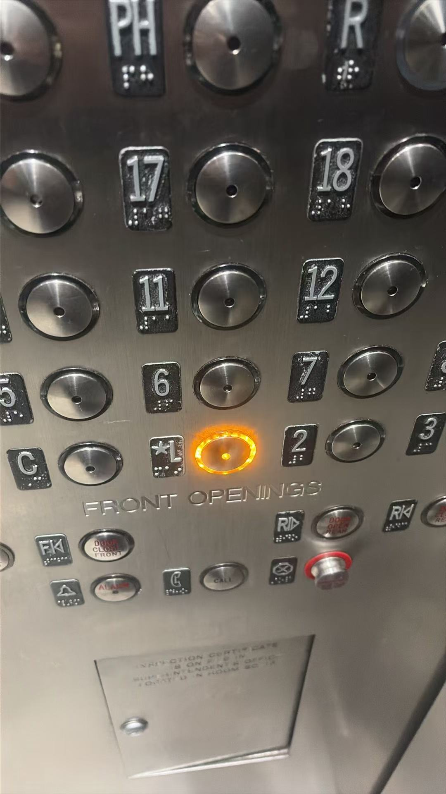
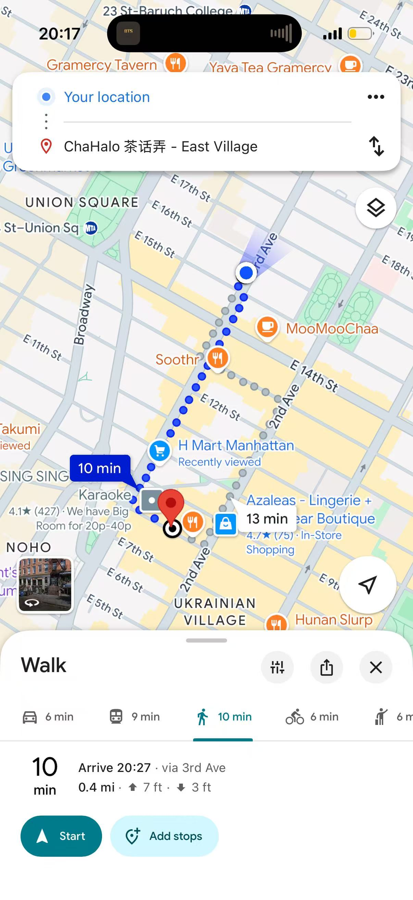
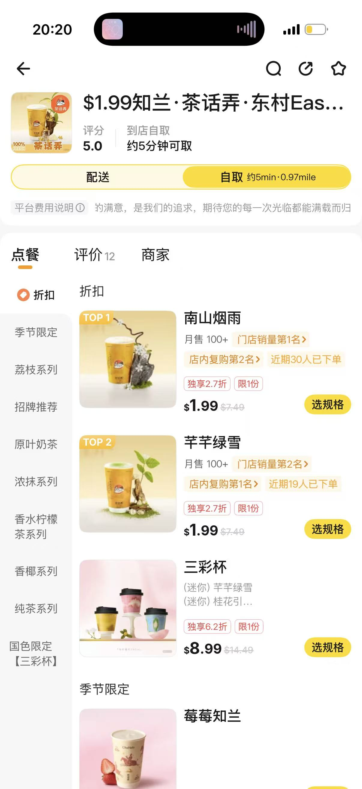
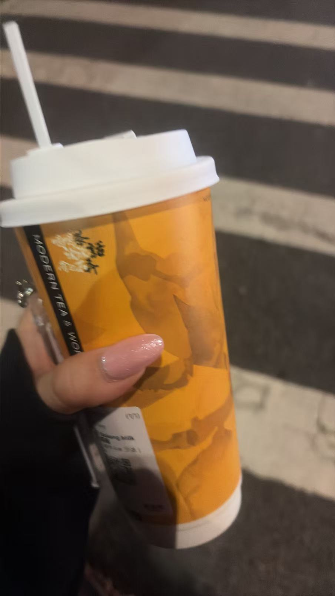
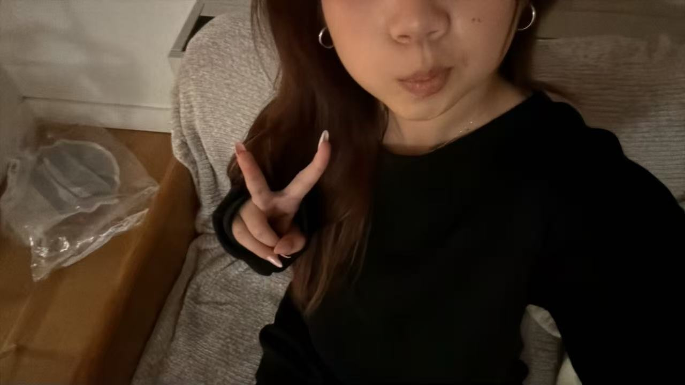
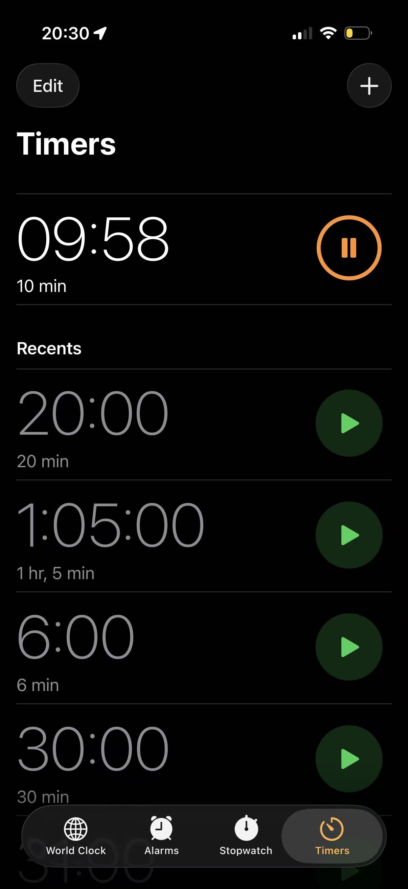
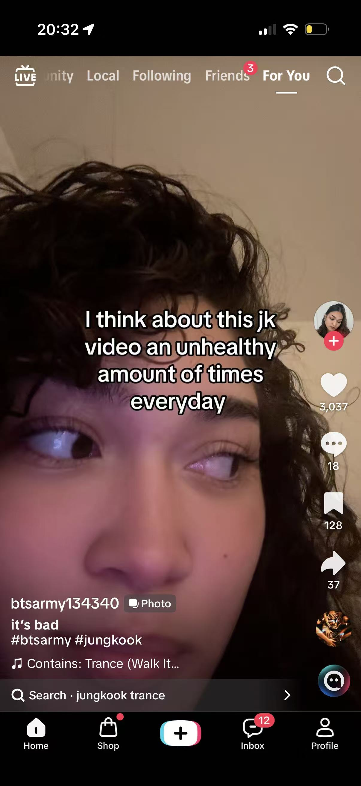

This is Ivy, Experiemntee 2's page of her take on wasting time during her gap at school. This experiment is more close to who the recipe is intelling to, a college student who commutes from their apartment to school campus. This shows more of what the recipe is really like for a active student that just finished class and is waiting for their next class to start with no time to go home to rest and have no where to really go with a short gap.






